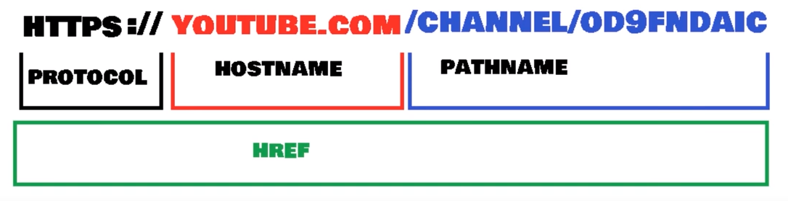
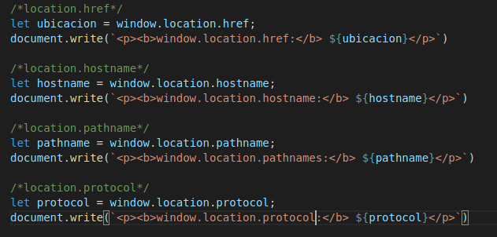

Lección 2 - Location
Definición: Son propiedades de Windows que permite obtener el href de la pagina, el nombre de dominio, la ruta, etc.
Propiedades:
- window.location.href Devuelve la localización de href de la pagina actual.
- window.location.hostname Devuelve el nombre de dominio del servidor.
- window.location.pathname Devuelve en donde estamos situados, del dominio en donde nos encontramos.
- windows.location.protocol Devuelve el protocolo web utilizado que puede set http o https

Codigo:
